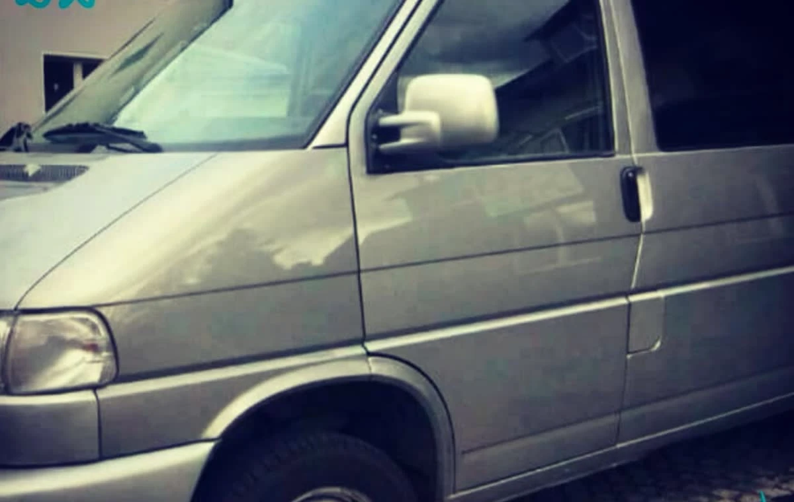

Der T4 VR6 als Alltags-Camper — Raumwunder, DIY-Hacks und maximale Flexibilität

Hallo, hier ist Justine aus dem Tussy Van! 💛 Fangen wir ganz am Anfang an — bei dem Bus, mit dem für mich alles losging.
Wer an ein Leben im Camper denkt, hat oft direkt das klassische Bild vor Augen: ein starr verbautes Bett, eine feste Küchenzeile und Platz für exakt zwei Personen. Doch für mich musste mein T4 VR6 ein echter Allrounder sein – ein Fahrzeug, das den Spagat zwischen spontanen Roadtrips und dem turbulenten Alltag mit Freunden meistert. Die Lösung? Ein absolut pragmatisches Raumkonzept und eine Reihe von cleveren DIY-Hacks, die den Bus im Handumdrehen in ein autarkes Zuhause auf Rädern verwandelten.
Das Raumkonzept: Quer schlafen für maximale Flexibilität
Der wohl größte Clou an meinem Ausbau war die Nutzung des Platzes hinter den Rücksitzen und der letzten Dreierbank. Im Gegensatz zum klassischen Multivan-Konzept, bei dem man oft die gesamte Sitzbank umklappen und das Bett komplett der Länge nach auslegen muss, haben wir uns für eine andere Variante entschieden: Wir haben hinten quer geschlafen. Da das Bett dadurch nicht den gesamten Innenraum blockierte, blieb die Dreierbank voll einsatzbereit. Das war ideal! Selbst wenn wir voll bepackt unterwegs waren, konnten wir problemlos noch Freunde mitnehmen. Zu sechst im T4 wegzufahren und spontane Ausflüge zu machen, war kein Problem. Es war genug Platz für alle da – Alltagstauglichkeit par excellence.
Wasser, Gas und die sanitäre Revolution
Später kamen für noch mehr Transportmöglichkeiten Airlineschienen aufs Dach, doch das Herzstück des Innenausbaus war die autarke Versorgung. Ich brauchte Frischwasser im Auto. Statt teurer Spezialtanks besorgte ich mir eine simple 20-Liter-Glasgallone. Mit einem passenden elektrischen Pumpenaufsatz wurde daraus im Handumdrehen eine mobile Wasserstation. So hatte ich jederzeit Kochwasser, Trinkwasser und – wenn nötig – sauberes Wasser zum Waschen parat. Die Gallonen wurden platzsparend gestapelt, und direkt darunter fand die Gasflasche ihren sicheren Platz, die ich je nach Bedarf bequem auf- und zudrehen konnte.
Auch beim Thema Sanitär gab es eine steile Entwicklungskurve. Am Anfang war es denkbar einfach: ein simpler Toiletteneimer, eine Plastiktüte und eine Handvoll Katzenstreu. Das funktionierte, war flexibel austauschbar und leicht zu entsorgen. Die echte Revolution kam jedoch mit dem Einbau einer maßgeschneiderten Trockentrenntoilette im unteren Fach. Plötzlich war das Camper-Setup komplett – sauber, geruchsneutral und perfekt integriert.
Strom und Gadgets ohne Solarpanel
Da ich zu diesem Zeitpunkt noch kein Solarpanel besaß (das kam erst viel später bei meinen nächsten Bussen), musste eine andere Energielösung her. Ich besorgte mir ein großes mobiles Starterpaket. Damit konnte ich nicht nur im Notfall das Auto selbst starten, sondern über die integrierten Ports problemlos meine USB-Geräte und Tablets laden. Während der Fahrt wurde das Paket einfach über den Zigarettenanzünder wieder aufgeladen. Zusätzlich hatte ich einen kleinen Wechselrichter (Umwandler) für den Zigarettenanzünder dabei, um bei Bedarf normalen Haushaltsstrom für andere Geräte zu ziehen. Meistens reichte es zwar zum Aufladen, aber das gute Gefühl, für alles gewappnet zu sein, fuhr immer mit. Mit diesem Setup, ergänzt durch Auffahrbretter und ein Abschleppseil im unteren Fach, hatte ich quasi immer alles dabei, was man für das nächste Abenteuer braucht.
Die konkreten Produktlinks (teils Werbung/Affiliate) ergänze ich hier in Kürze.
Bis bald und immer gute Fahrt,
eure Tussy 💛